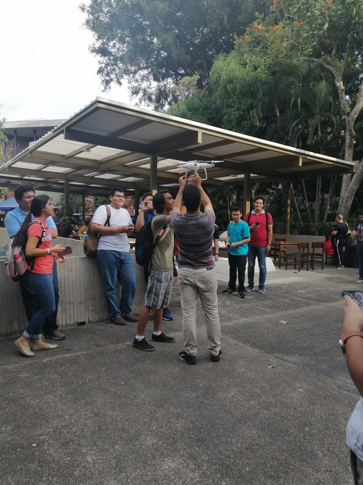

Guillermo Andres Salazar Salazar 00217218
Mi Blog
-
Martes 8 octubre
Al completar la funcion del dia anterior nos llevaba la pista hacie el polideportivo de la universidad en donde bajo una mesa de ajedrez se encontraba un codigo qr que nos daria el siguiente ejercicio el cual era hacer unos updates.
-
Miercoles 9 octubre
Luego de completar el ejercicio anterior la pista nos decia que teniamos que ir al labo-5 del DEI aunque por alguna razon esa pista fue cambiada hacia el nuevo mural que estan pintando bajo el edificio de las aulas D
-
Jueves 10 octubre
Luego de completar el ejercicio anterior la respuesta nos guio hacia fuera de nuestra aula en donde en medio del aire aparecio un dron con la siguiente pista. Lo gracioso era que la pista costo que la pista fuera leida por nuestros celulares.
-
Viernes 11 octubre

La ultima pista del dron nos llevo al aula Magna-V en la cual conoceriamos por fin a Kurt. Lo que no sabiamos era de que Kurt pues primero con nuestra ayuda desenmascaro a Varela y luego de que Kurt moriria repentinamente luego de tal hazaña. Aqui termina nuestra actvidad de bases de datos.
-
Sabado 12 octubre
Luego de terminada la actividad de base de datos empece a hacer mi tarea de blog, que pertenece a la materia de programacion Web. En la foto se puede apreciar mi computadora mientras tengo la vista previa de mi blog junto con el visualcode.